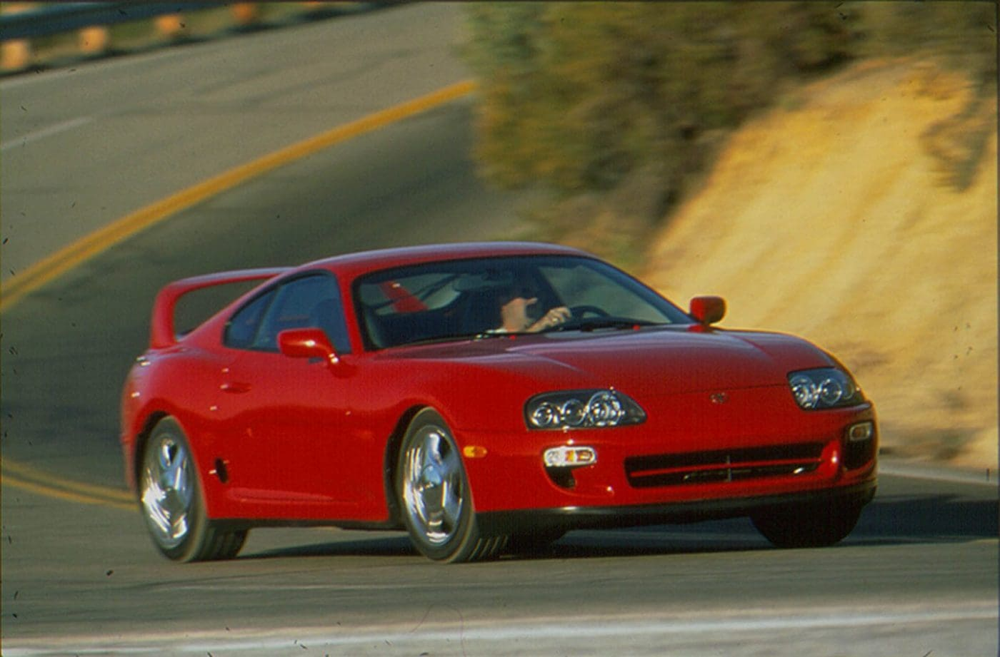
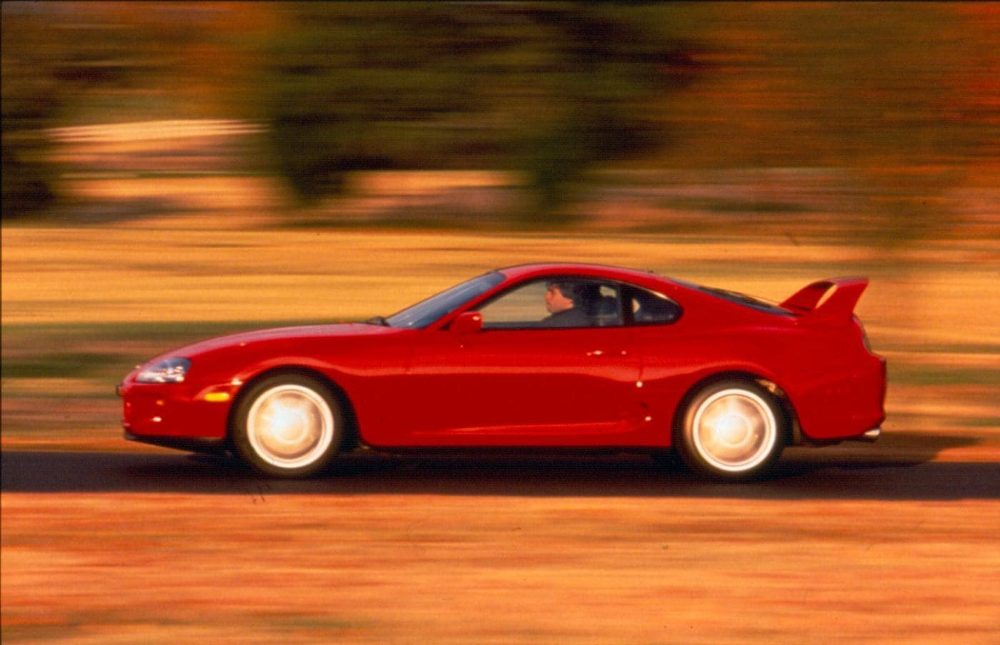
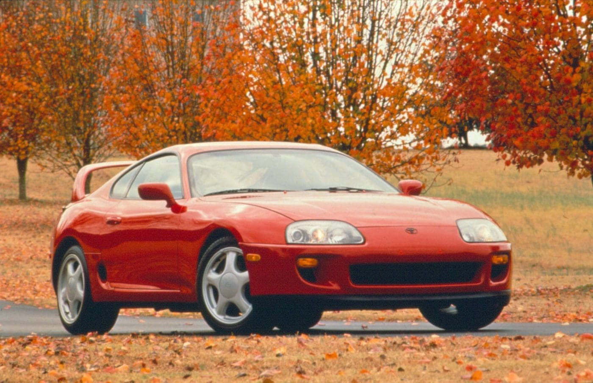
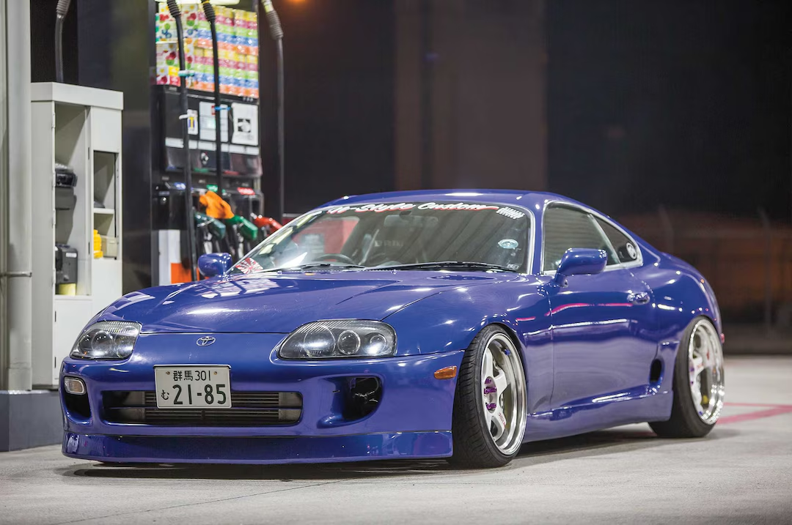

Toyota Supra MK4

O Toyota Supra, um carro esportivo japonês que deixou uma marca indelével na história automotiva, continua a cativar os corações dos entusiastas até hoje. Originalmente introduzido como um mero nível de acabamento em 1978, passou por diversas transformações ao longo de quatro gerações antes de emergir como um modelo próprio e distinto. No entanto, foi de 1993 a 2002 que o Supra solidificou verdadeiramente o seu estatuto lendário, com a versão Supra Mk4 a destacar-se como uma verdadeira maravilha de proezas de engenharia. Oferecendo uma infinidade de opções personalizáveis, como motores turboalimentados, transmissões manuais ou automáticas e até uma variante de tejadilho desportivo, o Supra tornou-se sinónimo de experiências de condução personalizadas.
Toyota Supra MK4 - Especificações

Conhecido como 2JZ-GTE, este formidável concorrente foi trocado por quase todas as marcas e modelos. Este motor Toyota Supra tem 321 cavalos de potência e 315 lb-pés de torque, mas dissecaremos isso um pouco mais tarde. Isso permitiu que a velocidade máxima do MK4 Supra fosse de 177 mph, mas foi limitada a 155 mph fora do Japão. A eficiência dos turbocompressores sequenciais permite que o Mark 4 Supra atinja 0-60 mph em 4,7 segundos. Na pista de arrancada, um Toyota Supra 1/4 de milha de 13 segundos a 109 mph tornou-o mais rápido do que muitos concorrentes V8.
- Preço (EUA): $40,000
- Motor: 3.0L Sequential Turbo Straight Six
- Transmissão: 6-Speed Manual, ou 4-Speed Automatic
- Cavalos: 321 HP
- 0-100km: 4.7s
- Velocidade Máxima: 285 km/h
Toyota Supra MK4 - Preço

Se um carro esportivo japonês pudesse definir uma década, teria que vir da Toyota. O carro-chefe da década de 1990 foi o Toyota Supra. O que começou como um nível de acabamento em 1978 evoluiu ao longo de 4 gerações para se tornar o seu próprio modelo. O preço do Toyota Supra dependia de três opções. A primeira foi a escolha entre turbo ou naturalmente aspirado. O número 2 é uma transmissão automática ou manual. O terceiro é a capota rígida ou esportiva. As especificações do Toyota Supra incluíam a opção de capota targa removível. Um preço Mark 4 Toyota Supra bem escolhido chegaria a US$ 40.000, uma fração do que eles vendem agora. Na verdade, o preço do Supra Mk4 disparou exponencialmente ao longo dos anos, chegando facilmente a mais de US$ 100.000 por um exemplar em ótimo estado, mas também há muitos exemplares usados que podem chegar abaixo de US$ 100 mil dependendo da condição e das modificações. Além disso, não seria surpreendente encontrar Mk4 Supras que tiveram seus motores fortemente modificados, especialmente no departamento de turbocompressores.
JDM King

O Supra é um ícone da cultura JDM devido à sua performance, design e modificações personalizadas. Sua presença imponente e a possibilidade de transformações mecânicas e estéticas fizeram dele um dos carros mais amados entre os entusiastas. Além disso, sua confiabilidade e capacidade de suportar grandes quantidades de potência adicional tornaram o Supra uma base perfeita para projetos de tuning extremos.
Mais Sobre JDM